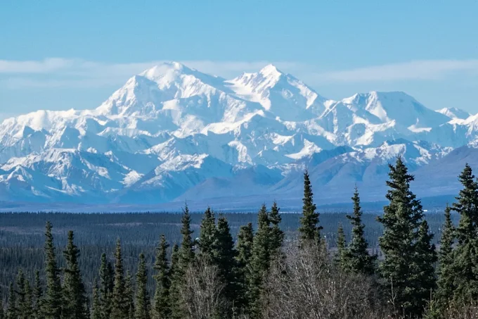

Antigamente conhecido como Monte McKinley, ele não é
apenas o ponto mais alto da América do Norte, mas sim o coração pulsante do Alasca, uma
montanha imponente, cercada por gelo.
O nome Denali, dado pelos povos nativos, significa "O
Grande". Enquanto o Everest impressiona por sua altitude total, o Denali
quebra recordes quando olhamos da base ao topo: são 5.500 metros de desnível vertical contínuo,
criando uma parede de neve que domina completamente o horizonte
Mas vale o aviso: ele é tão belo quanto extremo.
• O reino do gelo: A metade superior da montanha vive sob um manto perpétuo de
neve profunda e
geleiras gigantescas, como a Kahiltna, que se estende por mais de 70 quilômetros.
• Clima de extremos: As temperaturas lá no topo podem despencar para
congelantes -46°C, com
ventos que fazem a sensação térmica parecer de outro planeta.
• O mistério do gigante: O Denali cria o seu próprio microclima e costuma se
esconder atrás de
cortinas de nuvens. Conseguir vê-lo com o céu completamente limpo é algo que acontece em cerca
de 30% dos dias, um verdadeiro prêmio para os visitantes.